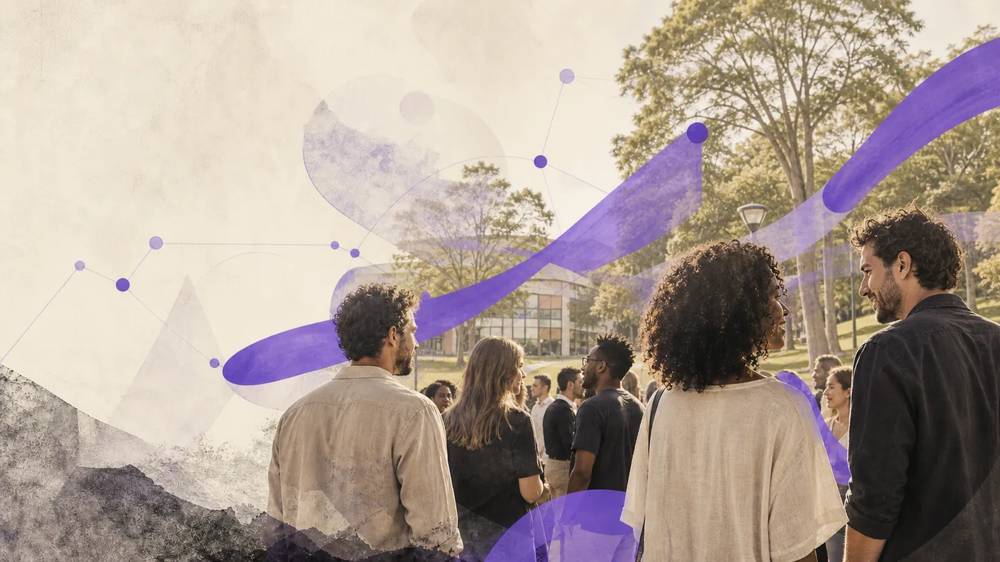
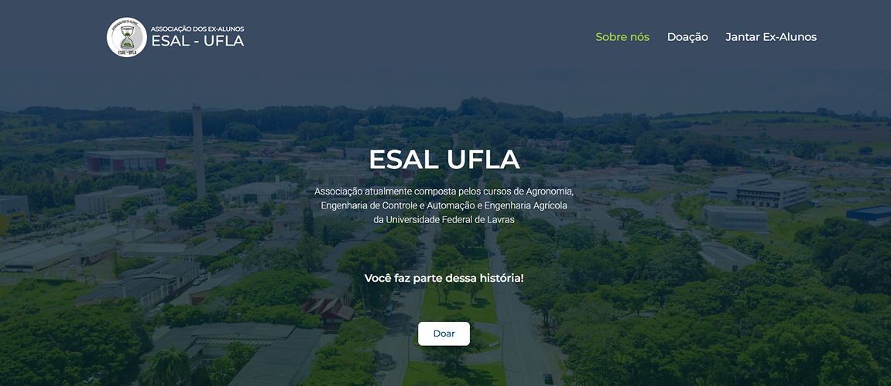

← Todos os projetos
05 / EDUCAÇÃO E COMUNIDADE
Site Alumni ESAL-UFLA
Uma experiência digital para aproximar ex-alunos da universidade.
UX/UI Design · Arquitetura de informação

A plataforma institucional apresenta a comunidade Alumni, organiza informações sobre cursos e mostra caminhos para contribuir com projetos educacionais da ESAL-UFLA.
- Desafio
- Ajudar públicos de diferentes gerações a encontrar conteúdo e formas de participar.
- Minha contribuição
- Arquitetura de informação e desenho da interface.
- Limite da evidência
- O valor mobilizado é dado da associação, sem atribuição ao design do site.
01 / DECISÃO
Vínculo, informação e ação.
Organizei histórias, conteúdos institucionais e possibilidades de contribuição em caminhos distintos para facilitar a orientação de ex-alunos.

02 / CONTEXTO
Escala da associação.
O ecossistema da associação mobilizou mais de R$ 2 milhões. Esse é um dado de contexto da organização, não um resultado atribuído ao design deste site.